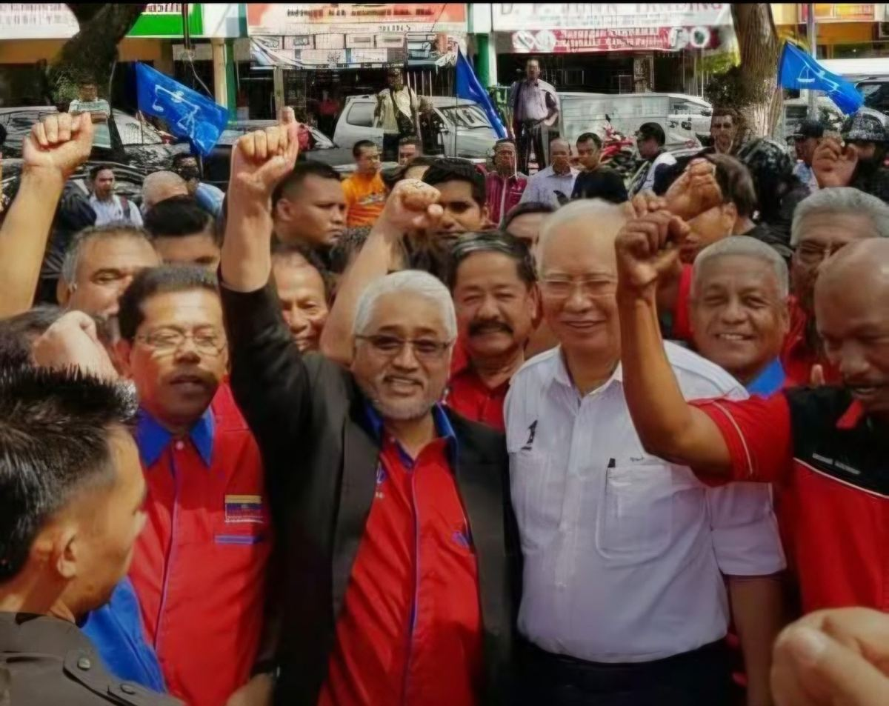
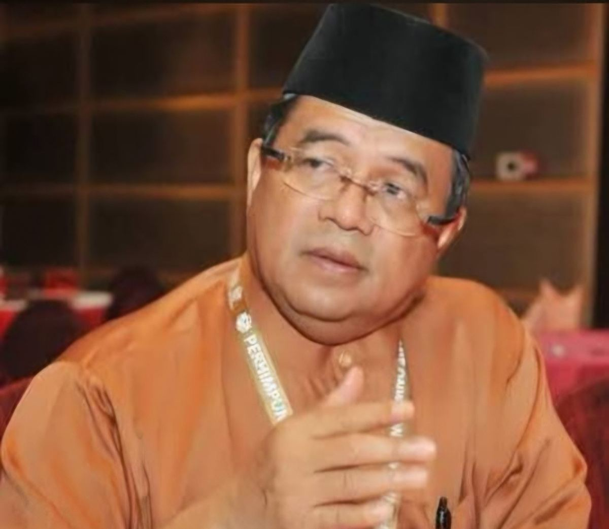

Kelab Sahabat Najib N87 Malaysia memandang serius penyebaran dokumen yang didakwa sebagai minit mesyuarat Lembaga Pengampunan berkaitan permohonan pengampunan Dato' Seri Najib Razak yang kini dikatakan beredar dalam ruang awam.
Isu ini bukan perkara kecil dan tidak boleh dianggap sekadar pertikaian politik. Ia melibatkan persoalan integriti dokumen rasmi kerajaan, kerahsiaan proses institusi Perlembagaan serta penghormatan terhadap institusi Yang di-Pertuan Agong.
Kelab berpandangan bahawa perkara ini memerlukan perhatian segera pihak berkuasa bagi memastikan kesahihan dokumen, mengenal pasti punca penyebarannya dan menentukan sama ada terdapat sebarang pelanggaran undang-undang.
Sehubungan itu, Kelab menggariskan enam pendirian utama seperti berikut:
Pihak berkuasa perlu mengesahkan sama ada dokumen yang tersebar itu benar-benar merupakan minit mesyuarat rasmi Lembaga Pengampunan atau sebaliknya.
Kesahihan sesuatu dokumen tidak boleh ditentukan berdasarkan dakwaan, tangkap layar atau penyebaran di media sosial semata-mata. Pengesahan hendaklah dibuat melalui saluran rasmi dan pihak berautoriti.
Kelab berpandangan bahawa satu laporan polis wajar dibuat dengan segera bagi membolehkan Polis Diraja Malaysia (PDRM) menjalankan siasatan menyeluruh.
Siasatan perlu mengenal pasti sumber asal dokumen, pihak yang mempunyai akses kepadanya, bagaimana dokumen tersebut boleh tersebar serta individu atau pihak yang bertanggungjawab sekiranya berlaku kebocoran.
Pihak penyiasat hendaklah meneliti sama ada penyebaran dokumen berkenaan mempunyai unsur pelanggaran Akta Rahsia Rasmi 1972, termasuk peruntukan Seksyen 2C dan Seksyen 8, serta Seksyen 203A Kanun Keseksaan atau mana-mana peruntukan undang-undang lain yang berkaitan.
Walau bagaimanapun, penentuan kesalahan hendaklah dibuat berdasarkan ketulenan dokumen, status kerahsiaannya, fakta dan bukti yang diperoleh serta nasihat undang-undang yang sewajarnya.
Proses pengampunan mempunyai kedudukan tersendiri di bawah Perkara 42 Perlembagaan Persekutuan.
Justeru, segala dokumen dan maklumat berkaitan proses tersebut hendaklah ditangani dengan penuh tanggungjawab, berhemah dan menghormati institusi Yang di-Pertuan Agong serta kerangka Perlembagaan negara.
Tidak sepatutnya perkara yang menyentuh institusi tertinggi negara dijadikan bahan manipulasi, polemik atau pertarungan politik.
Kelab menyeru semua pihak supaya tidak membuat tuduhan melulu, menyebarkan dokumen yang belum disahkan atau memutarbelitkan kandungannya sehingga mencetuskan kekeliruan dan persepsi negatif dalam kalangan rakyat.
Sebarang perbincangan mengenai isu ini hendaklah berasaskan fakta, bukti dan kefahaman terhadap proses perlembagaan, bukannya sentimen atau kepentingan politik kepartian.
Sekiranya terbukti berlaku kebocoran dokumen rasmi atau penyebaran maklumat secara tidak sah, pihak yang bertanggungjawab hendaklah dikenal pasti dan tindakan sewajarnya diambil mengikut lunas undang-undang.
Kelab tidak berniat melindungi mana-mana pihak yang melakukan kesalahan. Prinsip kami jelas: undang-undang mesti ditegakkan tanpa pilih kasih, tanpa campur tangan dan tanpa mengira kedudukan atau pengaruh seseorang.
Kelab Sahabat Najib N87 Malaysia akan terus berdiri memperjuangkan keadilan untuk Dato' Seri Najib Razak melalui saluran undang-undang dan Perlembagaan.
Kami tidak meminta layanan istimewa untuk sesiapa. Kami hanya menuntut supaya setiap proses dilaksanakan secara adil, telus, berintegriti dan berlandaskan undang-undang.
Dalam sebuah negara yang menjunjung kedaulatan undang-undang, tiada sesiapa boleh mengambil kesempatan menyebarkan dokumen rasmi tanpa mengambil kira implikasi perundangan dan kepentingan negara.